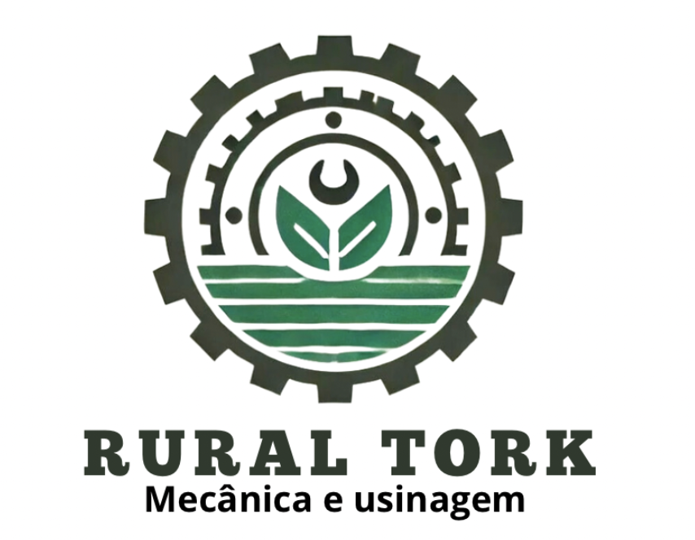
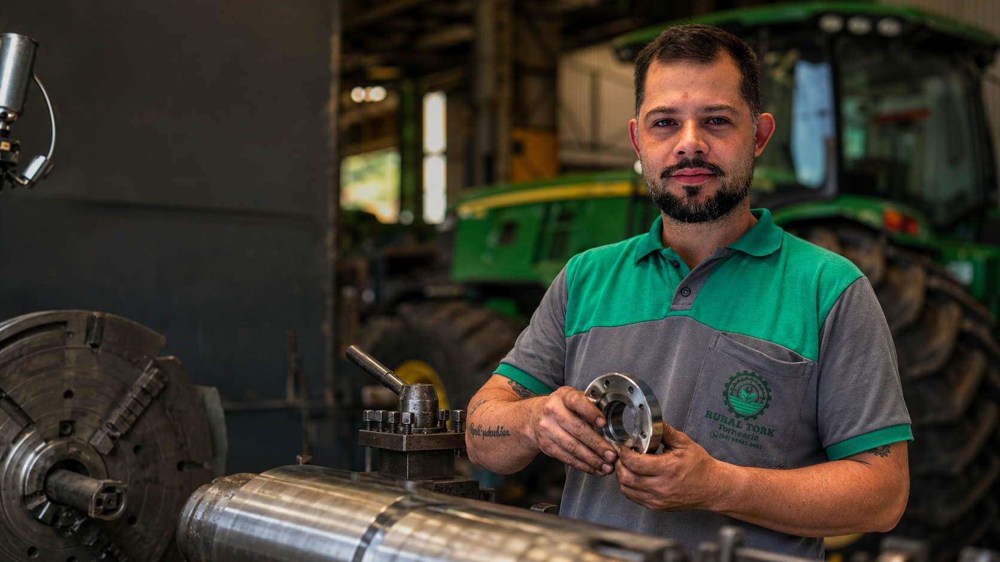

Diagnóstico direto
Avaliamos o problema e indicamos a solução viável, sem complicação.

RURAL TORKMecânica e usinagem Solicitar orçamento
Usinagem, tornearia, solda e reformas para máquinas agrícolas e implementos, com agilidade, resistência e acabamento preciso.
Unimos experiência prática, estrutura de oficina e precisão técnica para recuperar componentes, corrigir desgastes e devolver a máquina ao trabalho com segurança.
Avaliamos o problema e indicamos a solução viável, sem complicação.
Peças e reparos produzidos conforme a necessidade de cada máquina.
Acabamento preciso e materiais adequados para serviço pesado.
Comunicação clara e prioridade para reduzir o tempo de máquina parada.
Serviços realizados para recuperar, adaptar e prolongar a vida útil dos seus equipamentos.
Fabricação, recuperação e ajuste de peças com precisão dimensional.
Manutenção e reparos em tratores, máquinas agrícolas e implementos.
Reforços, correções estruturais e fabricação de soluções metálicas.
Recuperação funcional de conjuntos e equipamentos para voltar ao trabalho.
Desenvolvimento de componentes especiais quando a reposição não atende.
Envie fotos, vídeo ou traga a máquina/peça.
Definimos reparo, recuperação ou fabricação.
Trabalho técnico com acompanhamento.
Entrega com conferência e orientação.
Na Rural Tork, cada serviço nasce de um problema real da rotina agrícola. Nosso foco é devolver funcionalidade, resistência e confiança.
Ver trabalhos no Instagram“Serviço bem feito, atendimento direto e solução que realmente funciona.”Cliente Rural Tork
“Qualidade no acabamento e compromisso com o prazo combinado.”Cliente Rural Tork
“Uma oficina preparada para resolver serviço pesado.”Cliente Rural Tork
Converse com nossa equipe e envie as informações do serviço para uma avaliação inicial.
Chamar no WhatsApp